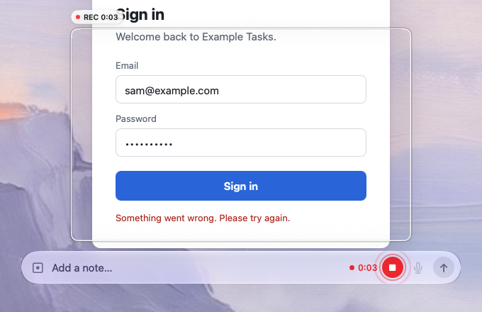
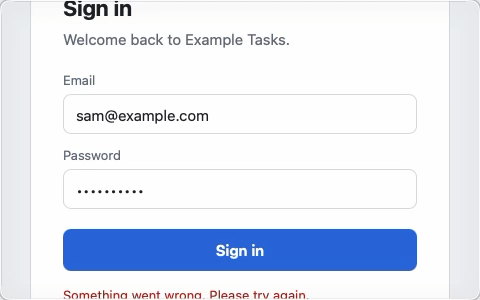
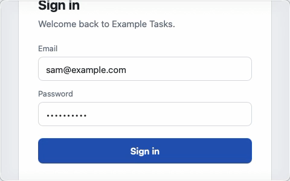
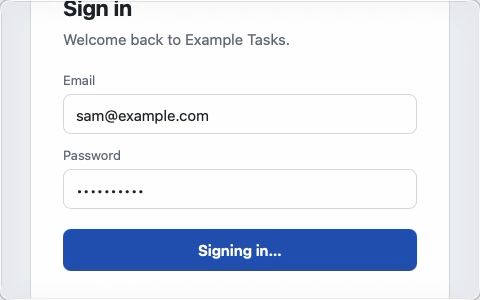
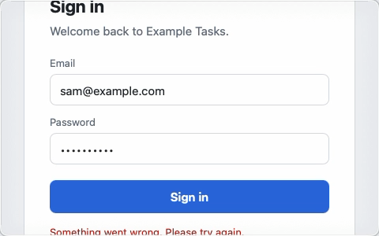
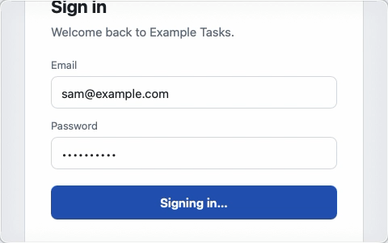

Record the bug.
Your agent reads it.
Capture turns a screen recording into frames and words your coding agent can read. All on your Mac.
Capture turns a screen recording into frames and words your coding agent can read. All on your Mac.

Record

The hand-off
An agent can’t play a video, so Capture sends what it can read.
Without Capture, you type
sign in is broken, not sure why
Your agent has to guess which screen, what state, and what the console showed.
With Capture, it receives

0:01
0:04 0:08
0:08
0:11
0:14
0:18“I click sign in. It says signing in, and then it just says something went wrong, nothing in the console.”
~/Documents/Capture/shared/2026-11-23 at 10.43.17/recording.mov
A real 19 second recording. The transcript is made on your Mac.
Features
Not every capture is a bug. The same bar takes all of it.
While the bar is open, each drag on the screen adds a screenshot. The words in it are read and saved with it.
The mic types your words into the bar as you speak, on your Mac.
Keep screenshots where your project lives, or in Capture’s own folder.
It waits in your menu bar, one click away.

Privacy
Speech and text are read on your Mac. Read the privacy policy
One-time purchase
Pay once, no subscription.
Placeholder: the waitlist opens before launch. One email when it launches. No spam.